Le jeu du pendu en ligne où l'un de vous ment. Jusqu'à 6 joueurs, dans le navigateur, sur PC comme sur téléphone.
🎮 Mode Classique (coop)🕵️ Mode Imposteur💬 Chat en direct⏱️ Manches chronométrées📱 Sans installation
01 — LogoUne potence, un espion
Le logo réunit les deux jeux qui composent UnderPendu : la potence du pendu classique, et un pendu qui porte le chapeau et le masque de l'imposteur.
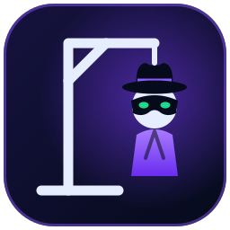
La potence blanche : le pendu, reconnaissable au premier coup d'œil, même en tout petit.
Le chapeau et le masque : l'imposteur caché parmi les joueurs, clin d'œil au jeu « Undercover ».
Les yeux verts : la même couleur que les bonnes lettres du clavier.
Le manteau violet : la couleur principale du jeu, présente sur tous les boutons.
Les tirets sous « PENDU » : les cases du mot à deviner, avec une lettre trouvée en vert.
L'icône reste lisible à toutes les tailles (onglet du navigateur, écran d'accueil du téléphone).
128 px64 px32 px16 px (onglet)
Sur fond clair, l'icône garde son fond sombre arrondi : elle ne disparaît jamais.
icônelogo complet
02 — CouleursUne ambiance de nuit, de mystère
Un fond bleu nuit presque noir, une couleur d'action violette, et deux couleurs de signal : vert quand on trouve, rouge quand on se trompe.
Nuit#050B1B Fond
Encre#0B1834 Cartes, panneaux
Violet#7C3CFF Boutons, marque
Vert#20D98A Bonne lettre
Rouge#FF405B Erreur, vies
Lune#F5F7FF Texte, potence
03 — TypographieInter, et une police machine à écrire pour le mot
AaAa
Inter — titres, boutons et textes. Moderne et très lisible sur écran.
UNDERPENDU — ExtraBold 800
Tour de rio — SemiBold 600
Info de la manche — Regular 400
p a p i _ _ _ _
Monospace — le mot à deviner. Toutes les lettres ont la même largeur, comme les cases du pendu sur papier.
o t a r i e
En fin de manche, le mot est révélé : les lettres non trouvées apparaissent en rouge.
04 — Éléments d'interfaceLes briques du jeu
Coins arrondis, cartes en léger dégradé, bordures bleutées fines : tous les écrans sont construits avec ces mêmes éléments.
👥 3/6 joueurs🕵️ ImposteurManche 1/3
APIZM♥♥♥♥♥♥⏳ 12s pour jouerIMPOSTEURINNOCENTKRT
05 — Le jeu en imagesLe parcours d'un joueur
Captures réelles du jeu, prises pendant une vraie partie à 3 joueurs.
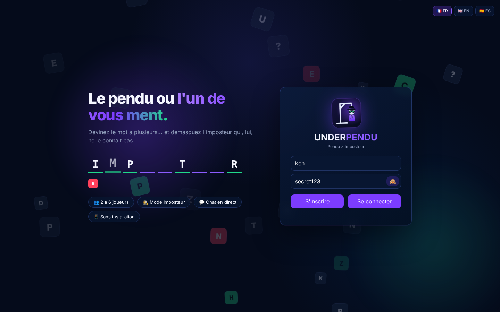
1ConnexionUn accueil vivant : lettres qui flottent, mini-pendu qui se joue tout seul, logo qui se balance. Un compte en 5 secondes, le bouton 👁️ affiche le mot de passe.
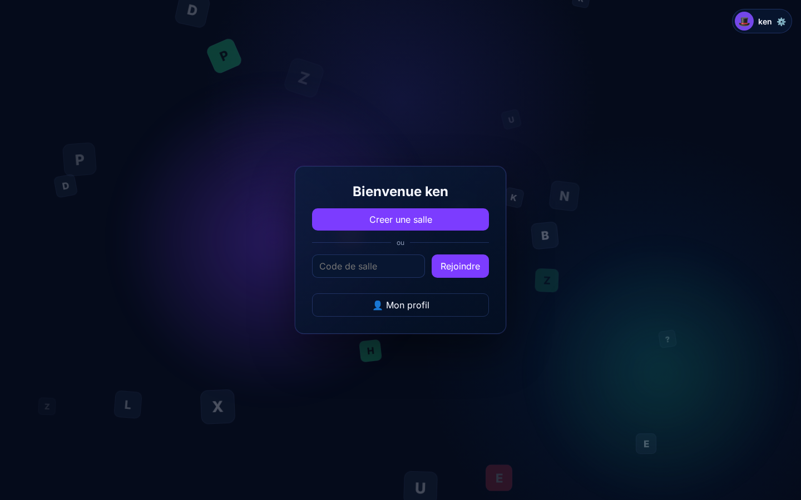
2AccueilCréer une salle, ou en rejoindre une avec son code à 5 caractères. En haut à droite : l'avatar du joueur, qui ouvre son profil et ses paramètres.
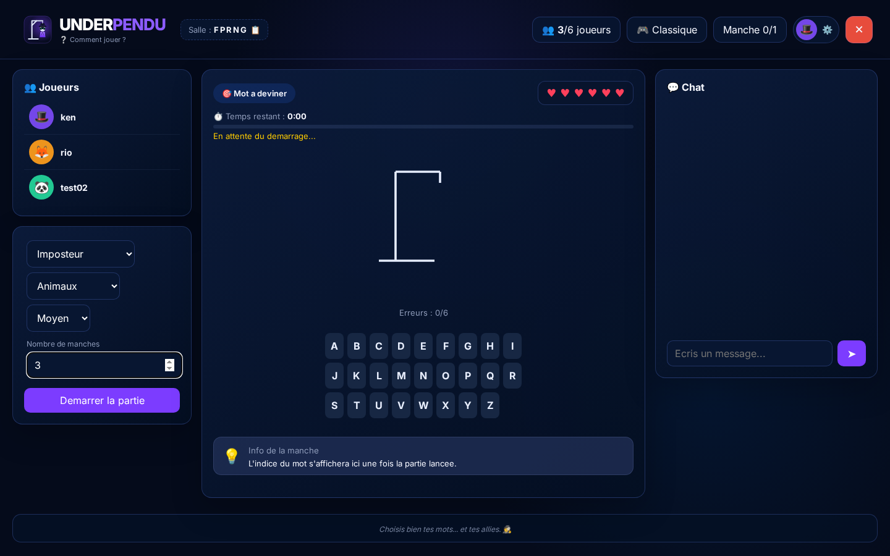
3Salle d'attenteL'hôte choisit le mode, la catégorie, la difficulté et le nombre de manches. Le code de salle se copie en un clic.
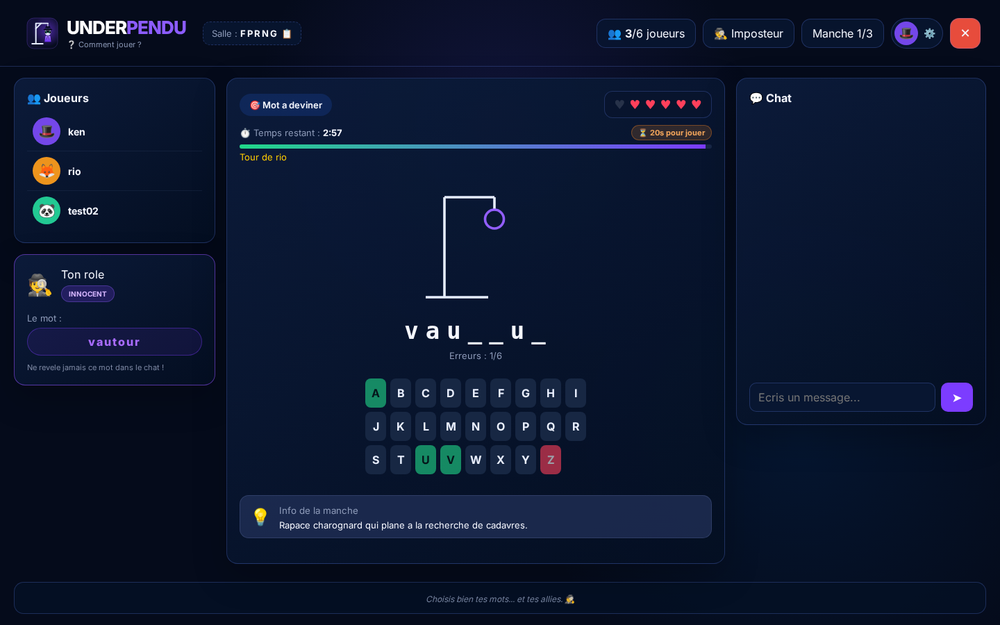
4Vue d'un innocentIl connaît le mot (carte « Ton rôle ») et propose les bonnes lettres… sans trop se trahir.
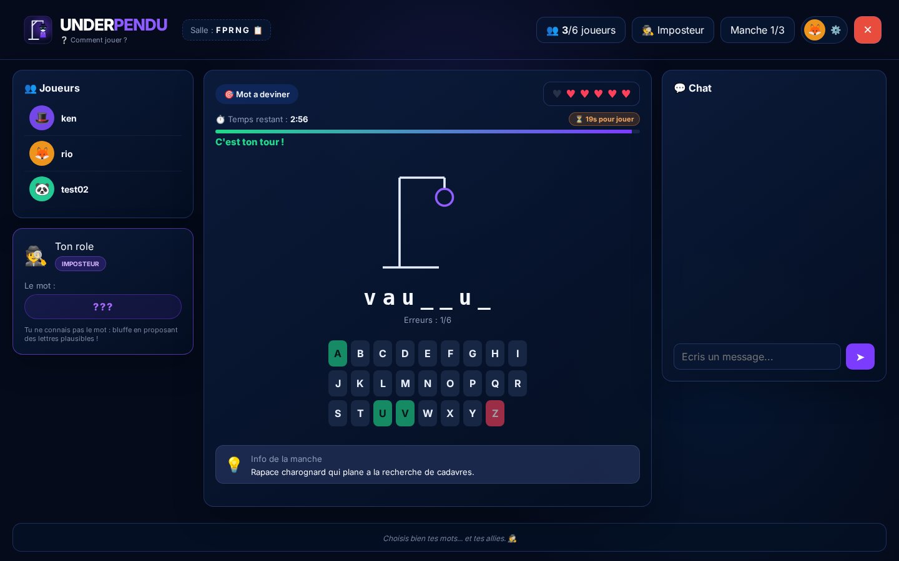
4Vue de l'imposteurMême écran, même indice, mais le mot est caché : « ??? ». Il doit bluffer.
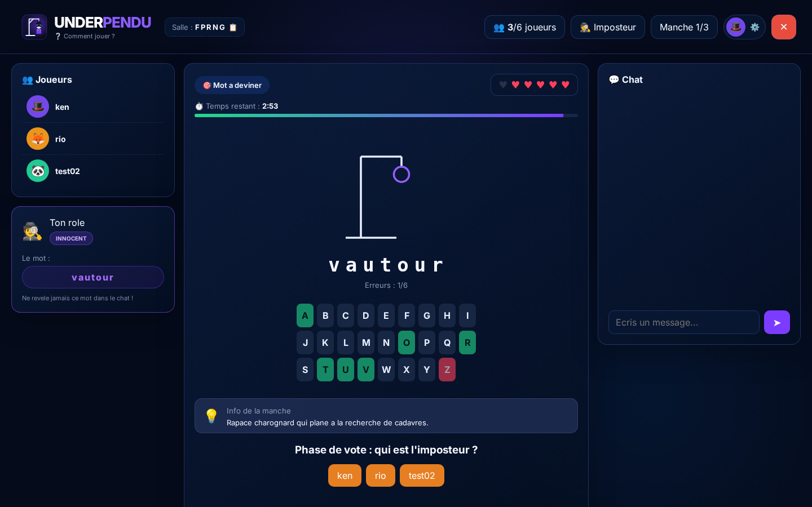
5Le voteMot trouvé ou pendu complet : chacun désigne celui qu'il soupçonne.
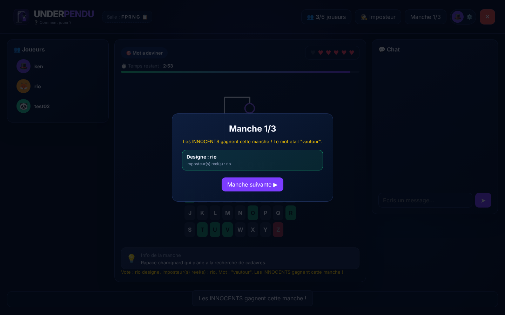
6Fin de mancheLe verdict, le vrai imposteur et le mot. L'hôte lance la manche suivante.
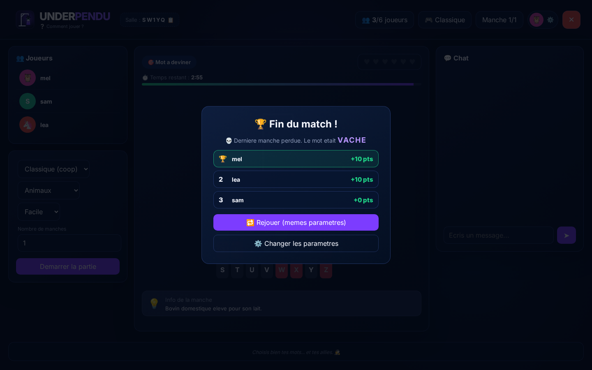
7Fin du matchClassement final. Même en cas de défaite, le mot est révélé.
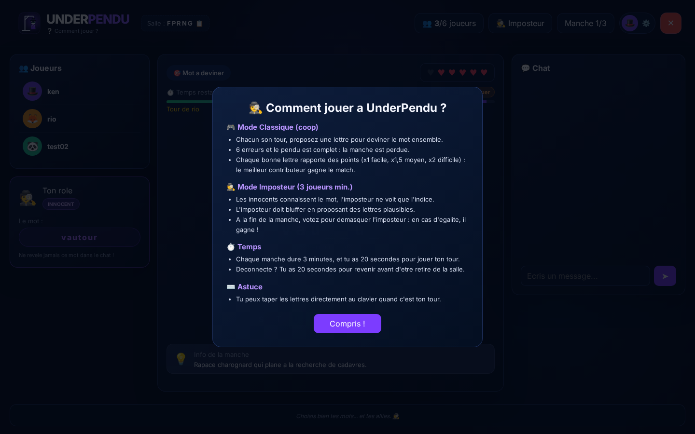
?Comment jouerUn clic sur le nom du jeu, en haut à gauche, ouvre les règles à tout moment.
06 — Profil et paramètresChaque joueur a son identité
Un clic sur son avatar, depuis l'accueil ou pendant une partie, ouvre le profil et les paramètres.
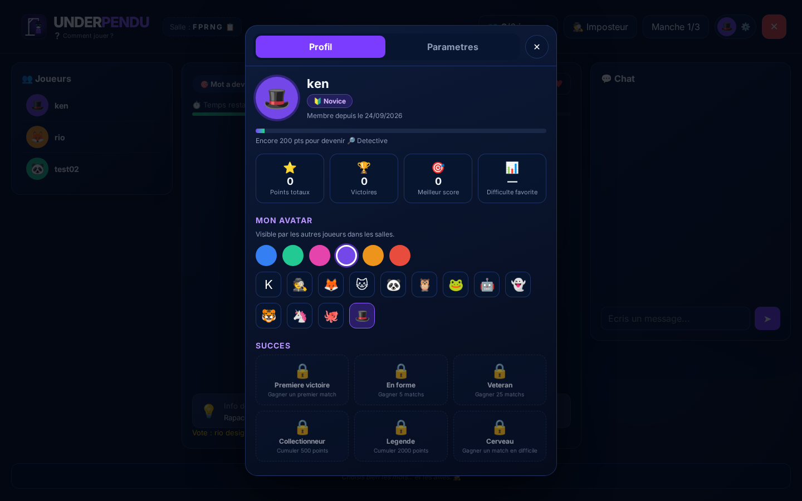
ProfilRang qui évolue avec les points (Novice → Détective → Inspecteur → Commissaire → Maître espion), statistiques, avatar (couleur + emoji) visible par les autres joueurs, succès à débloquer et historique.
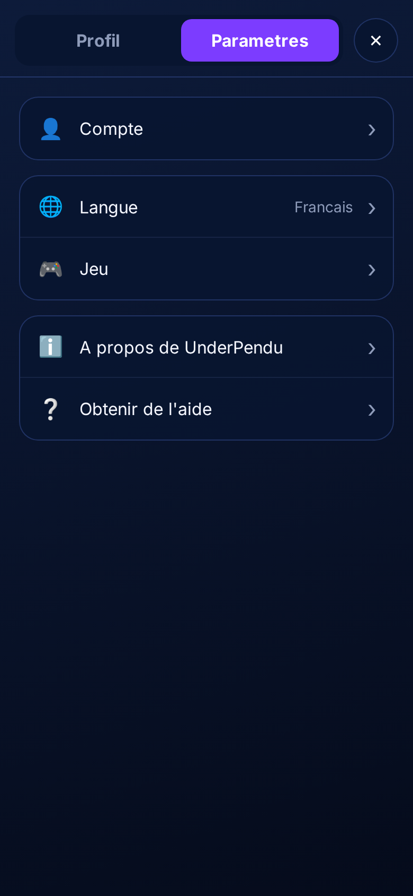
ParamètresCompte (mot de passe, déconnexion), langue, jeu (animations, vibration à son tour), à propos, aide.
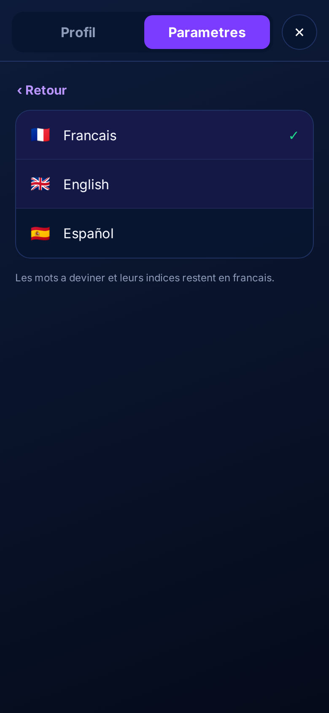
3 languesFrançais, English, Español. Chaque joueur choisit la sienne, même dans la même salle.
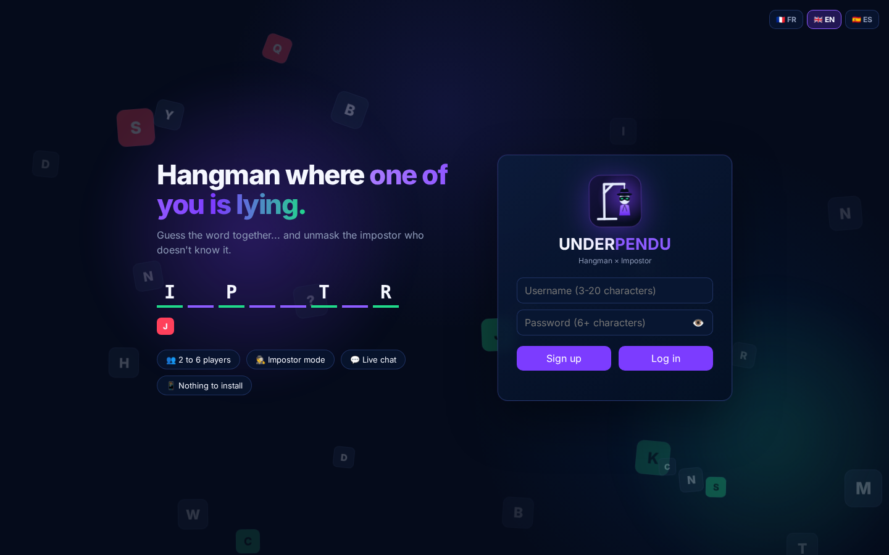
Détection automatiqueLe jeu s'ouvre dans la langue du navigateur. Les mots à deviner restent en français.
07 — Sur téléphone et tabletteLe même jeu, dans la poche
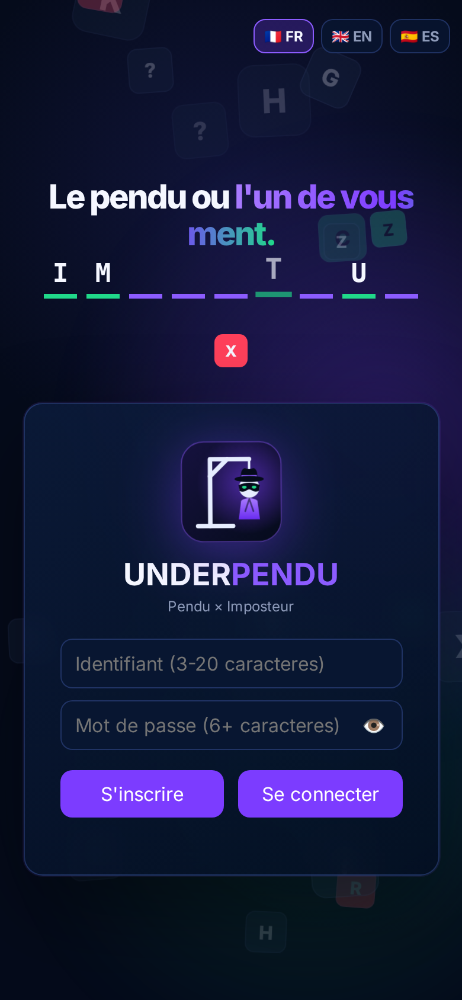
Connexion
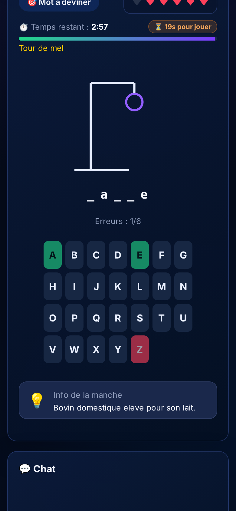
En partie
Aucune application à installer : on ouvre le lien dans le navigateur du téléphone ou de la tablette, et on joue.
Les colonnes (joueurs, jeu, chat) s'empilent sur les petits écrans.
Le clavier passe sur 7 colonnes avec de grandes touches.
Le profil et les paramètres s'ouvrent en plein écran, comme une appli.
Option : le téléphone vibre quand c'est ton tour.
08 — TonComment le jeu parle
Tutoiement, phrases courtes : « C'est ton tour ! », « Ne révèle jamais ce mot dans le chat ! »
Un peu de mystère : « Choisis bien tes mots… et tes alliés. 🕵️ »
Des emojis comme repères, un par idée : 🎯 le mot, 💡 l'indice, ⏱️ le temps, 💬 le chat.